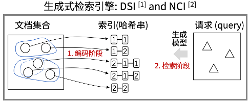
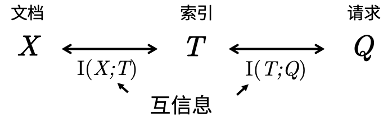

ICML 2024 Oral · Semantic Compression & Clustering
Bottleneck-Minimal Indexing for Generative Document Retrieval
Generative document indexing is formulated as a task-relevant information bottleneck, making the conditional query distribution—not surface document similarity—the basis of discrete index structure.
An Index Is Not a Summary of a Document
Generative retrieval assigns each document a short discrete code and trains a sequence-to-sequence model to translate a query directly into that code. The index is both an identifier and the output space the retrieval model must learn. An unstructured code requires memorizing an almost arbitrary query–number map; a code clustered only by document content may preserve information irrelevant to actual retrieval.
The question is therefore not how accurately to compress a document, but what to compress for queries. Similar documents may answer different questions, while differently worded documents may be retrieved by the same query pattern. Hierarchical document clustering assumes that content similarity substitutes for query-behaviour similarity, but that assumption does not follow from the retrieval objective.

The Indexing Objective from an Information Bottleneck
Let document, index, and query be , , and . Minimizing alone maps every document to one constant and destroys retrieval. BMI adds the task constraint that the code be short while retaining information needed to infer a query:
Under the Markov relation , this is equivalent to trading code rate against the conditional mutual-information distortion . The latter measures query-relevant information lost when documents share an index. Different designs trace a retrieval-specific information-bottleneck curve; its lower-left boundary gives minimum query distortion at a fixed index capacity.
The variational stationary condition reveals the geometry:
Documents should share an index according to their conditional query distributions. Conventional document clustering is justified only when its distance approximates this KL distortion.
From the Objective to Trainable Codes
The true is unknown and may be multimodal. Under a Gaussian approximation, the paper represents a document by the mean BERT representation of its associated queries, then applies hierarchical -means. Each tree level emits one digit, creating a prefix code. Documents with similar query distributions share longer prefixes and let the generator reuse local decisions.
Query samples come from three complementary sources: observed queries, docT5query generations, and passages extracted from the document. The first two approximate questions users may ask; passages restore entities and context missing from short queries. On MARCO Lite with T5-mini, document representations alone give Rec@1 7.09. Adding generated queries gives 9.24, observed queries gives 10.03, and using all sources reaches 13.54. Query-driven indexing does not discard the document; it aligns every signal with the same conditional-distribution estimate.

Index Structure Matters Most under Limited Capacity
Experiments use NCI’s T5 and PAWA decoding architectures on NQ320K and MARCO Lite, changing only the index. With T5-mini, Rec@1 on NQ320K rises from 41.43 to 48.49; on MARCO Lite it rises from 7.09 to 13.54, a relative gain of 91%. With T5-base, gains remain but shrink to 1.26 and 3.72 points.
This capacity effect matches the bottleneck interpretation. A larger model can memorize some irregular query–code mappings and compensate for a poor code. A small model cannot bypass index structure, so alignment with query distributions directly affects learnability. BMI reaches Rec@1 66.9 on NQ320K, approaching methods that use additional learned indexing procedures while retaining static digital identifiers.
Method Boundary
BMI turns heuristic document clustering into task-relevant semantic compression. The theory defines geometry through the full and its KL divergence; the implementation approximates it with finite queries, BERT means, a Gaussian assumption, and hierarchical -means. Means erase structure when query distributions are strongly multimodal, and a static index must be updated as documents or user behaviour change.
These limitations motivate direct distortion over generative distributions, dynamically reassignable codes, and a joint rate–distortion analysis of model capacity, code length, and recall. The central conclusion remains: the quality of a document index should be judged by how much information required for retrieval it retains, not how much document content it can reconstruct.